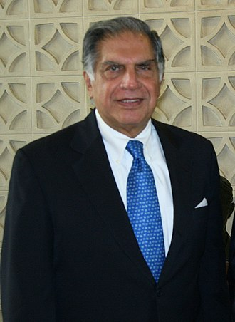
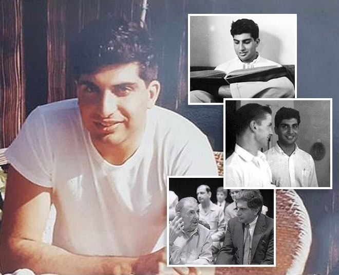
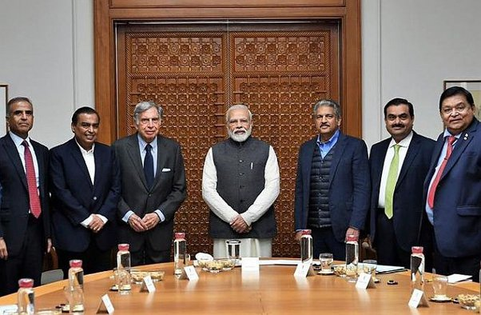
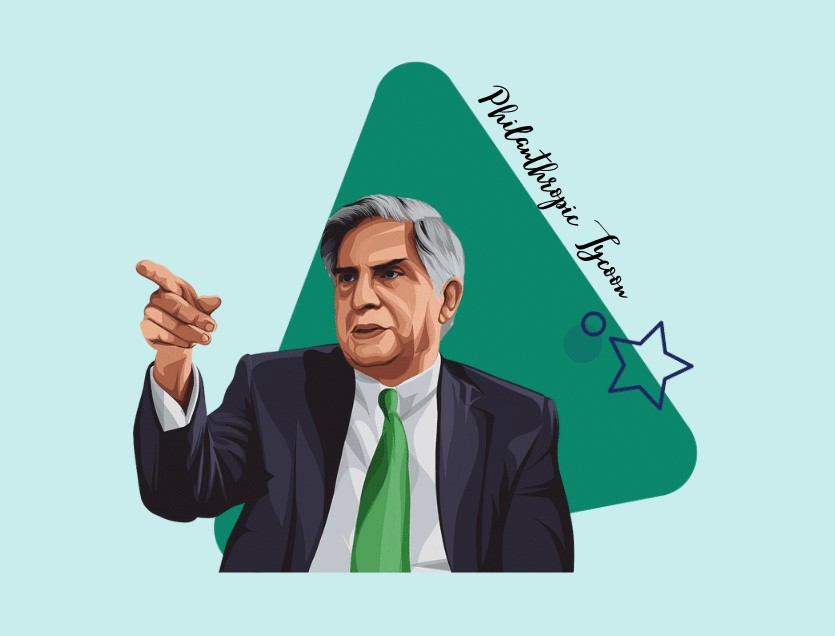
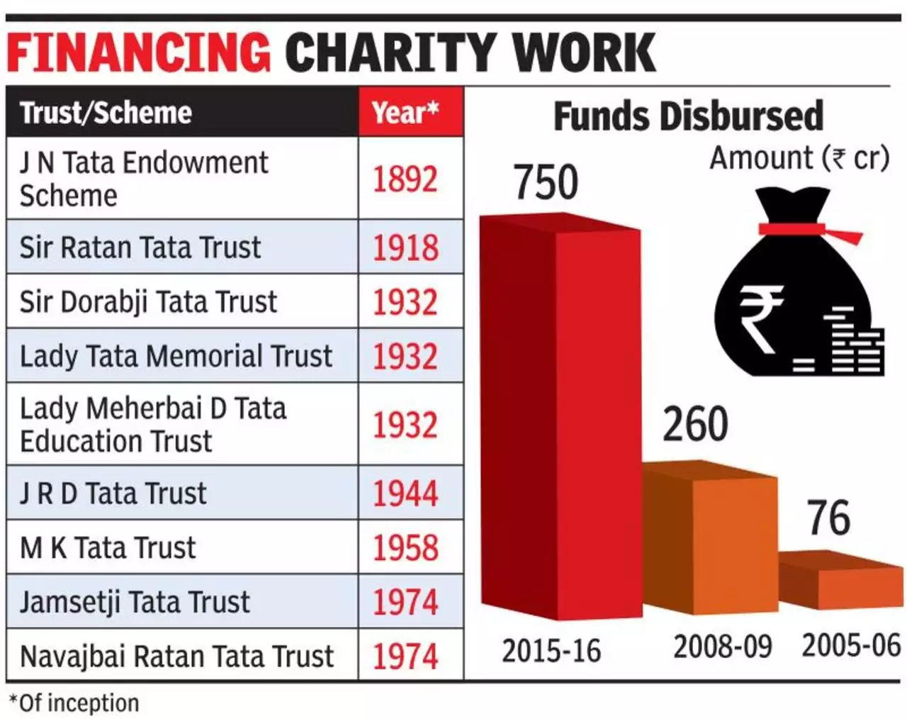
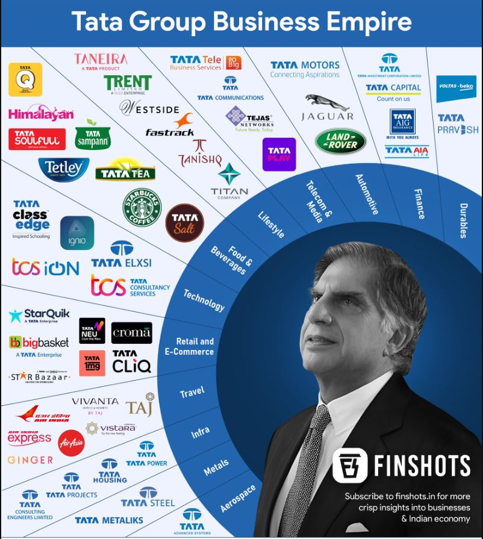
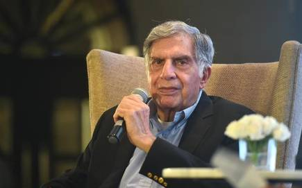
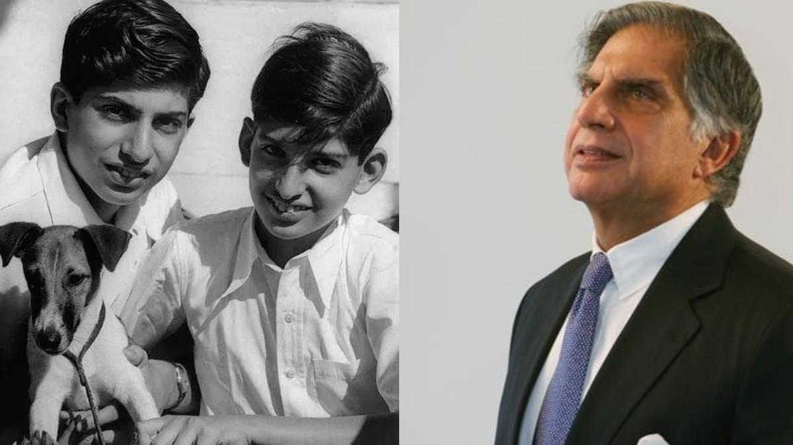
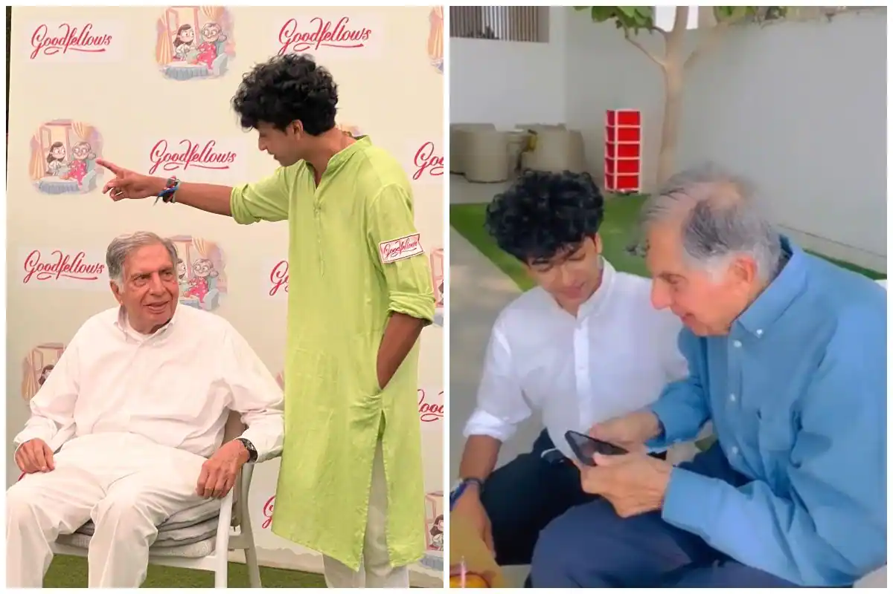

Introduction

Ratan Naval Tata (born 28 December 1937) is an Indian industrialist, philanthropist and former chairman of Tata Sons. He was a chairman of the Tata Group from 1990 to 2012, and interim chairman from October 2016 through February 2017. He continues to head its charitable trusts. In 2008, he received the Padma Vibhushan , the second highest civilian honour in India, after receiving the Padma Bhushan, the third highest civilian honour in 2000.
He is the son of Naval Tata, who was adopted by Ratanji Tata, son of Jamsetji Tata, the founder of the Tata Group. He graduated from the Cornell University College of Architectur e with a bachelor's degree in architecture. He joined Tata in 1961, where he worked on the shop floor of Tata Steel. He later succeeded J. R. D. Tata as chairman of Tata Sons upon the latter's retirement in 1991. Under his tenure the Tata Group acquired Tetley, Jaguar Land Rover, and Corus, in an attempt to turn Tata from a largely India-centric group into a global business.
Tata is also one of the largest philanthropists in the world, having donated around 60–65% of his income to charity.Ratan Tata is also a prolific investor and has made numerous investments in several startups.Tata has invested in over 30 start-ups till date, most from his personal capacity and some via his investment company.
Tata in 2010
Early life

Ratan Tata was born in Bombay, now Mumbai, during the British Raj, on 28 December 1937. He is the son of Naval Tata , who was born in Surat and later adopted into the Tata family, and Sooni Tata, the niece of Tata group founder Jamsetji Tata. Tata's biological grandfather, Hormusji Tata, was a member of the Tata family by blood.
In 1948, when Tata was 10, his parents separated, and he was subsequently raised and adopted by Navajbai Tata, his grandmother and widow of Ratanji Tata. He has a younger brother Jimmy Tata and a half-brother, Noel Tata, from Naval Tata's second marriage with Simone Tata, with whom he was raised.
He studied at the Campion School, Mumbai till the 8th class. After which, he studied at the Cathedral and John Connon School in Mumbai, the Bishop Cotton School in Shimla, and the Riverdale Country School in New York City, which he graduated from in 1955. After graduating from high school, Tata enrolled in Cornell University, from which he graduated with a bachelor's degree in architecture in 1959. In 2008, Tata gifted Cornell $50 Million, becoming the largest international donor in the university's history.
Career

In the 1970s, Tata was given a managerial position in the Tata group. He achieved initial success by turning the subsidiary National Radio and Electronics (NELCO) around, only to see it collapse during an economic slowdown. In 1991, J. R. D. Tata stepped down as chairman of Tata Sons, naming him his successor. Initially, Tata faced stiff resistance from the heads of various subsidiaries, who had a large amount of operational freedom under the senior Tata's tenure.
In response, Tata implemented a number of policies designed to consolidate power, including the implementation of a retirement age, having subsidiaries report directly to the group office, and requiring subsidiaries to contribute their profit to building the Tata group brand. Tata prioritised innovation and delegated many responsibilities to younger talent. Under his leadership, overlapping operations between subsidiaries were streamlined into company-wide operations, with the group exiting unrelated businesses to take on globalisation.
During the 21 years Tata led the Tata Group, revenues grew over 40 times, and profit over 50 times. When he took over the company, sales overwhelmingly comprised commodity sales, but at the end of his tenure, the majority of sales came from brands. He had Tata Tea acquire Tetley, Tata Motors acquire Jaguar Land Rover, and Tata Steel acquire Corus. These acquisitions repositioned Tata from a largely India-centric group into a global business, with over 65% of revenues coming from operations and sales internationally.He also conceptualized and spearheaded the development of the Tata Nano car, which helped put cars at a price-point within reach of the average Indian consumer. Tata Motors has since rolled out the first batch of Tigor Electric Vehicles from its Sanand Plant in Gujarat, which Tata has described as "fast-forward[ing] India's electric dream."

Upon turning 75, Ratan Tata resigned his executive powers in the Tata group on 28 December 2012. An ensuing leadership crisis over his succession drew intense media scrutiny. The board of directors and legal division of the company refused to appoint his successor, Cyrus Mistry, a relative of Tata and the son of Pallonji Mistry of the Shapoorji Pallonji Group, which was the largest individual shareholder of the Tata group. On 24 October 2016, Cyrus Mistry was removed as chairman of Tata Sons, and Ratan Tata was made interim chairman. A selection committee, which included Tata as a member, was formed to find a successor. On 12 January 2017, Natarajan Chandrasekaran was named as the chairman of Tata Sons, a role he assumed in February 2017. In February 2017, Mistry was removed as a director for Tata Sons. The National Company Law Appellate Tribunal later found in December 2019 that the removal of Cyrus Mistry as the chairman of Tata Sons was illegal, and ordered that he be reinstated. On appeal, India's Supreme Court upheld the dismissal of Cyrus Mistry.
Tata has also invested in multiple companies with his own wealth. He has invested in Snapdeal – one of India's leading e-commerce websites. In January 2016, he invested in Teabox, an online premium Indian Tea seller, and CashKaro.com, a discount coupons and cash-back website. He has made small investments in both early and late stage companies in India, such as INR 0.95 Cr in Ola Cabs. In April 2015, it was reported that Tata had acquired a stake in Chinese smartphone startup Xiaomi. In 2016, he invested in Nestaway an online real-estate portal that later acquired Zenify to start the online real-estate and pet-care portal, Dogspot. Tata also launched India's companionship startup for senior citizens, Goodfellows, in a bid to encourage intergenerational friendships."
Philanthropy

Tata is a supporter of education, medicine and rural development, and considered a leading philanthropist in India. Tata supported University of New South Wales Faculty of Engineering to develop capacitive deionization to provide improved water for challenged areas. Tata Hall at the University of California, San Diego (UC San Diego) is a state-of-the-art research facility that was opened in November 2018. The building is named after the Tata Trusts , who donated $70 million to UC San Diego in 2016 to establish the Tata Institute for Genetics and Society (TIGS), which is housed within the building.Tata Hall is a 4-story building that spans over 128,000 square feet and houses research facilities for the biological and physical sciences. The building has state-of-the-art laboratories, offices, and meeting spaces that are designed to foster collaboration and innovation among researchers. It is a LEED-certified building, which means it is designed to be environmentally sustainable and energy-efficient.
Tata Hall at UC San Diego is a research facility focused on biotechnology and houses the Tata Institute for Genetics and Society, which conducts research on genetics and disease control. It is named after the Tata Trusts, who made a $70 million gift to UC San Diego in 2016 to establish the Tata Institute for Genetics and Society. The Tata Institute for Genetics and Society at UC San Diego is a joint initiative between the Tata Trusts and UC San Diego. It aims to address some of the world's most pressing problems, such as the spread of infectious diseases and the need for sustainable food sources.

The research conducted at the institute focuses on a range of topics, including gene editing, stem cell therapy, and disease control. Tata Education and Development Trust, a philanthropic affiliate of Tata Group, endowed a $28 million Tata Scholarship Fund that will allow Cornell University to provide financial aid to undergraduate students from India. The scholarship fund will support approximately 20 scholars at any given time and will ensure that the very best Indian students have access to Cornell, regardless of their financial circumstances. The scholarship will be awarded annually; recipients will receive the scholarship for the duration of their undergraduate study at Cornell.
In 2010, Tata Group companies and Tata charities donated $50 million for the construction of an executive center at Harvard Business School (HBS). The executive center has been named Tata Hall, after Ratan Tata (AMP '75), chairman emeritus of Tata Sons. The total construction costs have been estimated at $100 million. Tata Hall is located in the northeast corner of the HBS campus, and is devoted to the Harvard Business School's mid-career Executive Education program. It is seven stories tall, and about 155,000 gross square feet. It houses approximately 180 bedrooms, in addition to academic and multi-purpose spaces.The Tata Innovation Center at Cornell Tech is named after Ratan Tata, and mixes academics and industry in a building on the Roosevelt Island campus. The seven-floor structure is meant primarily as a business incubator for students, faculty, and staff, with 70% of the building being commercially leased and 30% devoted to academic space. Tata Consultancy Services is a tenant in the space.

Tata Consultancy Services (TCS) has given the largest ever donation by a company to Carnegie Mellon University (CMU) for a facility to research cognitive systems and autonomous vehicles. TCS donated $35 million for this grand 48,000 square-foot building that is called TCS Hall.In 2014, Tata Group endowed the Indian Institute of Technology, Bombay and formed the Tata Center for Technology and Design (TCTD) to develop design and engineering principles suited to the needs of people and communities with limited resources. They gave ₹950 million to the institute which was the largest ever donation received in its history.
Tata Trusts under the Chairmanship of Ratan Tata provided a grant of ₹750 million to the Centre for Neuroscience, Indian Institute of Science to study mechanisms underlying the cause of Alzheimer's disease and to evolve methods for its early diagnosis and treatment. This grant was to be spread over 5 years starting in 2014.
Tata Group, under the leadership of Ratan Tata formed the MIT Tata Center of Technology and Design at Massachusetts Institute of Technology (MIT) with a mission to address the challenges of resource-constrained communities, with an initial focus on India.
Board Memberships and Affiliations

Ratan Tata was the interim chairman of Tata Sons. He continues to head the main two Tata trusts Sir Dorabji Tata and Allied Trusts and Sir Ratan Tata Trust and their allied trusts , with a combined stake of 66% in Tata Sons, Tata group's holding company. He has served in various capacities in organizations in India and abroad. He is a member of Prime Minister's 'Council on Trade and Industry' and the 'National Manufacturing Competitiveness Council'. He is on the jury panel of Pritzker Architecture Prize considered to be one of the world's premier architecture prizes.
Over the years Tata has served on the Cornell University Board of Trustees, personally advising the school's administration in matters of international involvement, particularly regarding projects connected to India. More broadly, Tata has served on the board's Academic Affairs, Student Life, and Development Committees. In 2013 he was named Cornell Entrepreneur of the Year.
He is a director on the boards of Alcoa Inc., Mondelez International and Board of Governors of the East–West Center. He is also a member of the board of trustees of University of Southern California, Harvard Business School Board of Dean's Advisors, X Prize[59] and Cornell University. He is a member on the board of International Advisory Council at Bocconi University. He is also a member of the Harvard Business School India Advisory Board (IAB) since 2006 and previously a member of the Harvard Business School Asia-Pacific Advisory Board (APAB) 2001–2006.
In 2013, he was appointed to the board of trustees of the Carnegie Endowment for International Peace. In February 2015, Ratan took an advisory role at Kalari Capital, a venture capital firm founded by Vani Kola. In October 2016, Tata Sons removed Cyrus Mistry as its chairman, nearly 4 years after he took over the reins of the over $100 billion conglomerate, Ratan Tata made a comeback, taking over the company's interim boss for 4 months. On 12 January 2017, Natarajan Chandrasekaran was named as the chairman of Tata Sons, a role he assumed in February 2017.
Honours and awards

Ratan Tata received the Padma Bhushan in 2000 and Padma Vibhushan in 2008, the third and second highest civilian honours awarded by the Government of India. Along with national civilian honours, Tata has also received various state civilian honours like 'Maharashtra Bhushan' in 2006 for his huge work in the public administration in Maharashtra and 'Assam Baibhav' in 2021 for his exceptional contribution towards furthering cancer care in Assam.
President Pratibha Patil
presenting the Padma Vibhushan to Ratan Tata,
at the Rashtrapati Bhavan, in 2008
Other awards include:
| Year |
Name |
Awarding organisation |
| 2001 |
Honorary Doctor of Business Administration |
Government of Uruguay |
| 2004 |
Medal of the Oriental Republic of Uruguay |
Ohio State University |
| Honorary Doctor of Technology |
Asian Institute of Technology |
| 2005 |
International Distinguished Achievement Award |
B'nai B'rith International |
| Honorary Doctor of Science |
University of Warwick |
| 2006 |
Honorary Doctor of Science |
Indian Institute of Technology Madras |
| Responsible Capitalism Award |
For Inspiration and Recognition of Science and Technology (FIRST) |
| 2009 |
Honorary Knight Commander of the Order of the British Empire (KBE) |
Queen Elizabeth II |
| Life Time Contribution Award in Engineering for 2008 |
Indian National Academy of Engineering |
| Grand Officer of the Order of Merit of the Italian Republic |
Government of Italy |
| 2016 |
Commander of the Legion of Honour |
Government of France |
| 2018 |
Honorary Doctorate |
Swansea University |
| 2022 |
Honorary Doctorate of Literature |
HSNC University |
| 2023 |
Honorary Officer of the Order of Australia (AO) |
King Charles III |
2007, 08, 10, 12, 13, 14, and 2015 Omitted due to Assignment Purpose
Personal life


Tata has never married and has no children, because he had loved one person in his youth, but wasn't able to marry that person. After that, he didn't seek love at all. He devoted his life to building his ancestral legacy, the Tata Group. In 2011, Ratan Tata stated, "I came close to getting married four times and each time I backed off in fear or for one reason or another."
Shantanu has been serving in the managerial post at Ratan Tata's office since 2018 and has been close to him ever since, being his millennial friend. Naidu has also published a book: I came upon a lighthouse in 2021 under Harper Collin's publication.
Creator: Santhosh T
Phone: +91-82480 33975 | E-mail: santhosh@gmail.com
Address: Chennai 600 053
LinkedIn
|
Naukri